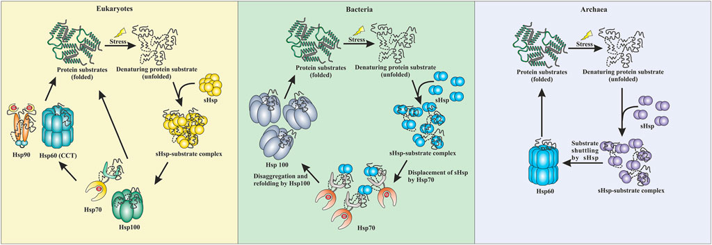
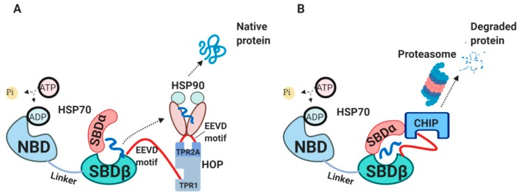

Unfolded Protein Binding
Annotation Review
Reclassifying GO:0051082 & GO:0031249
Chris Mungall | AI-Assisted Gene Review
2026-02-14
The Problem
GO:0051082 "unfolded protein binding" and GO:0031249 "denatured protein binding" proposed for obsoletion (go-ontology#30962)
These terms conflate mechanistically distinct activities under a single "binding" label:
- ATP-dependent foldases that actively refold clients
- ATP-independent holdases that prevent aggregation in situ
- Disaggregases that solubilize existing aggregates
- Sensors that recognize misfolded proteins for degradation
- Co-chaperones that modulate chaperone ATPase cycles
The Holdase-Foldase Network

Conserved across all domains of life: stress unfolds proteins; sHSPs (holdases) capture them to prevent aggregation; clients are handed off to Hsp70 (foldase) for ATP-dependent refolding, or to Hsp100 (disaggregase). Eukaryotes also use Hsp90 and Hsp60/CCT.
Figure 3 from Luo et al. (2022) Front Mol Biosci 9:832160, CC-BY 4.0
The Proteostasis Triage Decision

(A) HSP70-HOP-HSP90 axis: fold-forward pathway to native protein.
(B) HSP70-CHIP axis: ubiquitination and proteasomal degradation.
Co-chaperones (DNAJ, NEFs, BAG1/3) tune the fold vs degrade decision.
Figure 2 from Radons (2020) Cells 9:587, CC-BY 4.0
Recent Literature Context
Key reviews informing this reclassification:
- Mitra et al. (2022) Annu Rev Biophys 51:409 — ATP-independent chaperones; force-clamp experiments show context-dependent holdase/foldase switching
- Bhattacharjee et al. (2025) J Biosci — Co-chaperones fine-tune HSP70: fold, hold, or degrade; O-GlcNAc modification of HSP27 promotes BAG3-mediated refolding
- Boopathy (2024) — HUWE1 + HSP70 cooperate to clear nuclear inclusions, linking holdase activity to E3-mediated clearance
- Le et al. (2024) Mol Cells — UBR1/UBR2 as ER-stress sensors: substrate load stabilizes these E3s to enhance PQC
Scope of This Review
| Metric | Count |
|---|---|
| Unique genes reviewed | 148 |
| Human genes (primary) | 33 |
| Non-human genes | 115 |
| Species covered | 17 |
| Total annotations reviewed | 5,529 |
| Remaining PENDING | 0 |
All experimental annotations to GO:0051082/GO:0031249 across all species.
Mechanism Classes
| Class | GO term | ATP? | Example |
|---|---|---|---|
| Foldase | GO:0044183 | Yes | GroEL/ES, TRiC/CCT |
| Holdase | NTR needed | No | CRYAB, CLU |
| Carrier-holdase | GO:0140309 | No | Tim9-Tim10 |
| Foldase/holdase | GO:0044183 + holdase NTR | Yes | HSPA1A (HSP70) |
| Co-chaperone | (see gap) | N/A | DNAJB1, AHSA1 |
| Disaggregase | GO:0140545 | Yes | HSP104, HSPA1A |
| Sensor | NTR proposed | N/A | SYVN1, UGGT1 |
Decision Rules
| Mechanism | Action | Replacement |
|---|---|---|
| Foldase (GroEL, TRiC) | MODIFY | GO:0044183 |
| Foldase/holdase (HSP70) | MODIFY | GO:0044183 (holdase NTR pending) |
| Co-chaperone, J-domain | MODIFY | GO:0044183 (interim) |
| Holdase (sHSP, crystallin) | MODIFY | holdase NTR (retain GO:0051082) |
| Disaggregase | MODIFY | GO:0140545 |
| ER/QC sensor | REMOVE | (not chaperones) |
| HSP90 co-chaperone | OVER_ANNOTATED | (not direct UPB) |
Impact: Human Genes (n=33)
| Primary action | Count | Notes |
|---|---|---|
| MODIFY to GO:0044183 (foldase) | 16 | HSP70 (6), J-domain interim (4), prefoldin (6) |
| MODIFY to holdase NTR | 7 | sHSPs, CLU, SCG5, DNAJB6, DNAJB8 |
| MODIFY to other specific MF | 2 | NPM1, AIP |
| MARK_AS_OVER_ANNOTATED | 5 | Sensor/co-chaperone cases |
| REMOVE | 3 | SYVN1, ERLEC1, GRPEL1 |
Plus 3 co-annotations to GO:0140545 (disaggregase): HSPA1A, HSPA1B, HSPA8
Before/After Examples
| Gene | Before | After | Why |
|---|---|---|---|
| HSPA1A | GO:0051082 | GO:0044183 + GO:0140545 | ATP-dependent foldase + disaggregase |
| CRYAB | GO:0051082 | holdase NTR | sHSP holdase; prevents aggregation in situ |
| DNAJB1 | GO:0051082 | GO:0044183 (interim) | J-domain co-chaperone, not independent foldase |
| SYVN1 | GO:0051082 | REMOVE | E3 ligase; recognizes misfolded substrates |
| NPM1 | GO:0051082 | GO:0140713 | Histone chaperone; UPB was secondary |
Critical Finding: The Holdase Gap
GO:0140309 "unfolded protein carrier activity" does not fit most holdases.
- Created Nov 2025 for TIM carrier-holdases (Tim9-Tim10) in go-ontology#30552
- Definition requires escort "between two different cellular components"
- "holdase" is a BROAD synonym (not exact) on GO:0140309
- Val acknowledged a general holdase term was needed but deferred it
7 human genes + HSPH1 are in-situ holdases that prevent aggregation without inter-compartment escort. They cannot use GO:0140309.
Proposed: "Holdase Chaperone Activity"
Definition: Binding to an unfolded or misfolded protein to prevent its aggregation without actively catalyzing refolding. The holdase maintains the client protein in a soluble, folding-competent state.
Parentage: Direct child of GO:0003674 (molecular_function).
GO:0140309 (carrier-holdase) becomes a child of this new term.
Affected genes: CRYAA, CRYAB, HSPB6, CLU, SCG5, DNAJB6, DNAJB8, HSPH1
GO:0051082 obsoletion must be blocked until this NTR exists.
Other Ontology Gaps
Misfolded protein sensor activity
- Recognition of misfolded conformation for QC degradation
- CHIP/STUB1 ubiquitinates chaperone-bound clients; UBR1/UBR2 recognize N-degrons (Le et al. 2024)
- Affects: SYVN1, SAN1 (yeast), Fbxo2 (mouse)
Co-chaperone MF representation
- GO:0003767 "co-chaperone activity" deliberately obsoleted
- No MF term for J-domain co-chaperone function (ATPase activation + substrate delivery)
- GO:0044183 used as pragmatic interim
- Affects all J-domain proteins across species
Cross-Species Validation
The same mechanism classes apply universally across 17 species.
| Species | Genes | Highlights |
|---|---|---|
| S. cerevisiae | 67 | All 14 mechanism classes represented |
| E. coli | 13 | Periplasmic holdases (SurA, Skp, Spy, HdeA/B) |
| D. melanogaster | 7 | sHSPs Hsp22-27 |
| M. musculus | 6 | Hspa8 largest review (240 annotations) |
| R. norvegicus | 4 | Hspa5/BiP (101 annotations) |
| Other (12 spp.) | 18 | Zebrafish crystallins, CnoX redox holdase |
Notable Cross-Species Findings
- SlrP (S. typhimurium): misannotation removed — T3SS effector E3 ligase, not a chaperone
- CnoX (E. coli): redox-activated holdase — becomes active under oxidative stress when Cys residues are oxidized
- Peroxiredoxins (TSA1, pmp20, tpx1): dual-function — peroxidase at low stress, holdase at high stress (overoxidation switch)
- Assembly factors (ATP10, PET100, COX20): single-client chaperones, not general UPB — all OVER_ANNOTATED
- IRE1 (yeast + T. reesei): UPR sensor, not chaperone — cross-kingdom confirmation
What We Need from GO Editors
- Holdase NTR (BLOCKING): Create "holdase chaperone activity" for in-situ holdases
- Block GO:0051082 obsoletion until holdase NTR exists (7 genes have no replacement)
- Preferred labels: "foldase" exact synonym on GO:0044183; "holdase" exact on new term
- Co-chaperone MF gap: How should J-domain function be annotated?
- HSP70 dual annotation: Confirm foldase + holdase per experimental context
- Misfolded protein sensor: New term for SYVN1, SAN1, Fbxo2?
Summary
148 genes across 17 species, 5,529 annotations reviewed
The key bottleneck is the holdase NTR — without it, 7+ genes
cannot be reannotated and GO:0051082 obsoletion is blocked.
All gene review YAMLs: genes/<SPECIES>/<GENE>/
Validate: just validate-all